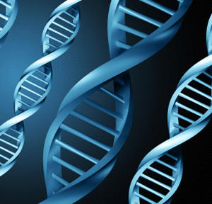

Welcome
About this website
This system has been designed so that it can measure the similarity between genes. Users no longer have to manually
work out gene similarity by doing the calculations themselves, but can now enter the names of gene products or GO terms
and this system will do the calculation for them.
The system uses a database which has been provided by the Gene Ontology Consortium.
The database is in MySQL format and holds all the information relating gene products to GO terms. The system itself has been coded in HTML
and PHP. PHP is a server-side scripting language, that can be embedded within HTML code and works well with MySQL.
The system is also based on a similarity method that was created by Anurag Nagar and Hisham Al-Mubaid. This method measures similarity by
calculating the path length (distance) between the two gene products or GO terms.
